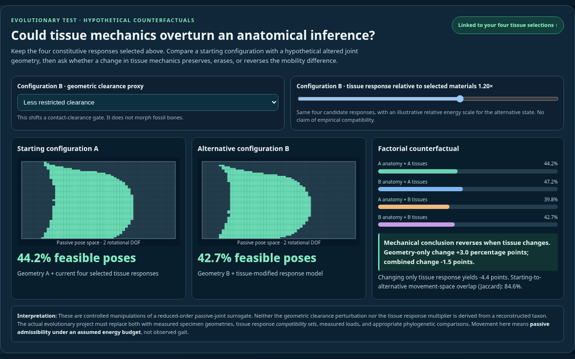

Research direction 01
From Tissue Responses to Joint Mobility
Select mechanical-response points from tissue-specific PCA atlases. The combined properties of skin, capsule, and muscles determine a modeled joint-mobility envelope.
Explore demo + proposal